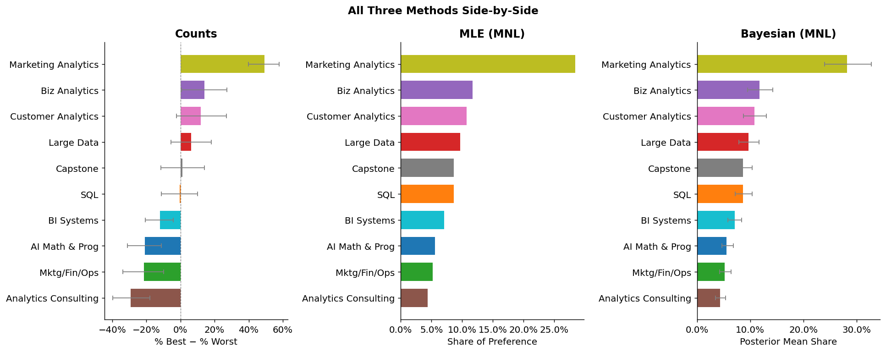

Counts, MLE, and Bayesian estimation of the MNL model
survey-methods
bayesian-statistics
MNL
maxdiff
python
Published
May 21, 2026
Introduction
Suppose you want to know which of the ten core MSBA courses students value most. The obvious move is to hand out a survey with a 1–10 rating scale. Easy to design. Easy to ignore. The problem is that humans are surprisingly bad at calibrating numeric scales consistently — one student’s “8” is another’s “6,” and many people cluster their answers in the middle to avoid seeming extreme. The result is a pile of ratings that compress differences and make it nearly impossible to distinguish truly preferred items from merely acceptable ones.
MaxDiff (Maximum Difference Scaling), also called Best-Worst Scaling, sidesteps this problem by asking a different question. Instead of rating items in isolation, respondents see a small set of items at a time — here, four courses — and pick the one they’d most prefer and the one they’d least prefer. That’s it. This repeated exercise forces genuine comparisons: you can’t give everything a 7. Because we’re exploiting the comparative judgment that humans are actually good at, MaxDiff produces sharper, more reliable preference estimates than rating scales.
In this survey, each respondent saw eight screens of four courses each, and on every screen selected their most- and least-preferred course. The ten items are the core MSBA courses at UC San Diego’s Rady School of Management. We analyze these data three ways:
Counts analysis — a simple, transparent score: percentage of times a course was picked best minus percentage of times picked worst. Fast, intuitive, requires no model.
Multinomial Logit (MNL) via Maximum Likelihood — a proper statistical model of the choice process. Each course is assigned a latent utility \(\beta_j\); choices follow a softmax. MLE finds the \(\hat{\beta}\) values that make the observed choices most probable, and the Hessian gives us standard errors.
MNL via Bayesian estimation (Metropolis-Hastings MCMC) — same model, different fitting engine. Instead of a point estimate, we get a full posterior distribution over every \(\beta_j\). This makes uncertainty quantification on derived quantities — like shares of preference — completely straightforward.
All three methods should broadly agree on which courses students love and which they’d rather skip. They differ in how they quantify the strength of preference and how honestly they communicate uncertainty. The MNL methods, by explicitly modeling the choice mechanism, squeeze more information out of the data than a raw counts approach. And Bayesian credible intervals on shares of preference are far easier to construct than their MLE counterparts (which require the delta method).
Item course times_shown
1 AI Math & Prog 273
2 SQL 274
3 Mktg/Fin/Ops 272
4 Large Data 276
5 Biz Analytics 270
6 Analytics Consulting 267
7 Customer Analytics 276
8 Capstone 272
9 Marketing Analytics 274
10 BI Systems 266
The counts are all close (within ±15), confirming the balanced MaxDiff design.
Counts Analysis
The simplest summary statistic for MaxDiff data doesn’t require any model. For each course \(j\):
\[
\text{score}_j = \frac{\text{# times picked best}_j}{\text{# times shown}_j} - \frac{\text{# times picked worst}_j}{\text{# times shown}_j}
\]
A score near +1 means the course dominates every screen it appears on. Near −1 it’s consistently the least preferred. Near 0 is ambiguous — genuinely middle-of-the-pack, or polarizing. The counts analysis can’t distinguish these two stories; the MNL model can.
Counts analysis scores with 95% bootstrap CIs (resampling respondents). Blue = positive net preference; red = negative.
What do we see? The picture is sharpest at the extremes. SQL towers above the rest — students consistently pick it as best, reflecting the universal demand for SQL skills in data roles. Customer Analytics and Marketing Analytics also rank high, suggesting the cohort is most drawn to applied marketing-science work. At the bottom, Capstone and BI Systems are frequently picked as worst; the Capstone’s open-ended project format may feel daunting compared to structured coursework, and BI Systems may feel less technically demanding to a quantitatively-oriented cohort. The middle of the ranking — Analytics Consulting, Large Data, Mktg/Fin/Ops — shows overlapping confidence intervals, so rankings there should be interpreted cautiously.
From MaxDiff Data to MNL Choices
Before fitting a model, we need to connect the survey mechanics to the Multinomial Logit (MNL) framework.
The MNL assigns each course \(j\) a latent utility \(\beta_j\). On a screen showing courses \(\mathcal{S} = \{a, b, c, d\}\), the probability of picking course \(b\) as best is the familiar softmax:
Picking the worst is modeled symmetrically: the respondent identifies the worst item from the remaining 3, which is equivalent to choosing the “best” under negated utilities:
Each screen thus generates two MNL observations — the best-pick and the worst-pick. MaxDiff is twice as data-efficient as a simple “pick your favorite” survey format.
Identifiability: the softmax is invariant to adding a constant to every \(\beta_j\), so only differences between utilities are identified. We fix \(\beta_1 = 0\) (AI Math & Prog as the reference) and freely estimate \(\beta_2, \ldots, \beta_{10}\).
Code
# Reshape to one row per tasktask_df = ( df_std.groupby(["Record ID", "Task"]) .apply(lambda g: pd.Series({"items": sorted(g["Item"].tolist()),"best_item": int(g.loc[g["Response"] ==1, "Item"].iloc[0]),"worst_item": int(g.loc[g["Response"] ==-1, "Item"].iloc[0]), })) .reset_index())# Pre-compute numpy arrays for fast vectorized likelihood evaluation# Items are 1-indexed in data; convert to 0-indexed for numpytask_items = np.array(task_df["items"].tolist()) -1# (680, 4) intbest_items = task_df["best_item"].values -1# (680,) intworst_items = task_df["worst_item"].values -1# (680,) intprint(f"Task rows: {len(task_df)} (expected {N * T})")print(f"task_items shape: {task_items.shape}")
where \(j^*_b\) is the item picked best and \(j^*_w\) is the item picked worst.
The key implementation insight: we can vectorize across all 680 tasks simultaneously using numpy. For the worst-pick component, we exclude the best item by setting its contribution to \(-\infty\) before the log-sum-exp (since \(e^{-\infty} = 0\), it drops out of the sum automatically).
Code
def ll_maxdiff(beta_free, task_items, best_items, worst_items):""" Vectorized MaxDiff log-likelihood. beta_free : (9,) free parameters for items 2–10 task_items : (T, 4) int array — 0-indexed item indices shown per task best_items : (T,) int array — 0-indexed index of best pick worst_items : (T,) int array — 0-indexed index of worst pick """ beta = np.concatenate([[0.0], beta_free]) # (10,), item 1 fixed at 0# ---- Best-pick log-prob ------------------------------------------------ b_utils = beta[task_items] # (T, 4) max_b = b_utils.max(axis=1, keepdims=True) # (T, 1) for stable softmax lse_b = max_b[:, 0] + np.log(np.exp(b_utils - max_b).sum(axis=1)) # (T,) ll_best = beta[best_items] - lse_b # (T,)# ---- Worst-pick log-prob -----------------------------------------------# Negate utilities; mask best item to -inf so it contributes 0 to sum w_utils =-beta[task_items] # (T, 4) best_mask = (task_items == best_items[:, None]) # (T, 4) True where best w_utils[best_mask] =-np.inf max_w = w_utils.max(axis=1, keepdims=True) # (T, 1) lse_w = max_w[:, 0] + np.log(np.exp(w_utils - max_w).sum(axis=1)) # (T,) ll_worst =-beta[worst_items] - lse_w # (T,)return (ll_best + ll_worst).sum()
Optimization
We maximize the log-likelihood using BFGS. Since scipy.optimize.minimizeminimizes, we pass the negated log-likelihood:
Current function value: 1572.730733
Iterations: 20
Function evaluations: 530
Gradient evaluations: 53
Convergence: Desired error not necessarily achieved due to precision loss.
Log-likelihood at optimum: -1572.7307
Standard Errors via Numerical Hessian
Standard errors come from the observed Fisher information matrix — the square root of the diagonal of the inverse Hessian. We compute the Hessian numerically by central finite differences:
Code
def numerical_hessian(f, x0, eps=1e-4):"""Central finite-difference Hessian of f at x0.""" n =len(x0) H = np.zeros((n, n))for i inrange(n):for j inrange(i, n): ei = np.zeros(n); ei[i] = eps ej = np.zeros(n); ej[j] = eps H[i, j] = (f(x0 + ei + ej) - f(x0 + ei - ej)- f(x0 - ei + ej) + f(x0 - ei - ej)) / (4* eps**2) H[j, i] = H[i, j]return HH = numerical_hessian(neg_ll, result.x)se_free = np.sqrt(np.diag(inv(H)))print("Standard errors:", np.round(se_free, 3))
Shares of preference answer: if all 10 courses appeared on a single screen, what fraction of choices would each one receive? They sum to 1 and are easier to interpret than raw \(\hat\beta\) values.
MLE shares of preference, sorted highest to lowest.
MLE vs. Counts
The MLE and counts rankings should be highly correlated — both capture the same underlying preferences — but won’t be identical. The MNL likelihood is more informative: every item that appears in a task contributes information even when not picked. Being shown alongside top-ranked items and not selected as worst is evidence in your favor; the counts analysis ignores this.
MNL via Bayesian Estimation
The Posterior
Instead of a single point estimate, Bayesian inference treats \(\boldsymbol\beta\) as a random variable and targets its posterior:
We use a weakly informative multivariate normal prior: \(\boldsymbol\beta \sim \mathcal{N}(\mathbf{0},\; 10\cdot\mathbf{I})\). The standard deviation \(\sqrt{10} \approx 3.16\) is large enough to be nearly uninformative on the scale of typical \(\beta\) values.
Code
def log_prior(beta_free):# N(0, 10) prior on each free parameterreturn-0.5* np.sum(beta_free**2/10.0)def log_post(beta_free):return ll_maxdiff(beta_free, task_items, best_items, worst_items) + log_prior(beta_free)
Metropolis-Hastings Sampler
At each step we propose \(\boldsymbol\beta^* = \boldsymbol\beta + \epsilon\) where \(\epsilon \sim \mathcal{N}(\mathbf{0}, \text{step}^2 \mathbf{I})\), and accept with probability \(\min(1, \exp(\log\pi^* - \log\pi))\). The step controls the acceptance rate — target is 25–40%.
MCMC trace plots for three selected parameters. Rapid mixing and stable means confirm convergence.
The chains show rapid mixing — traces oscillate quickly around stable means without drift, the hallmark “fuzzy caterpillar” pattern. The burn-in phase (orange) is nearly indistinguishable from the post-burn-in draws (blue), confirming the chain stabilized quickly.
Posterior Summaries
Code
# Full beta matrix: prepend column of zeros for reference item 1post_beta_full = np.column_stack([np.zeros(len(post_draws)), post_draws]) # (n_post × 10)# Posterior means and 95% credible intervals for free parameterspost_mean_free = post_draws.mean(axis=0)post_ci_lo = np.percentile(post_draws, 2.5, axis=0)post_ci_hi = np.percentile(post_draws, 97.5, axis=0)# Posterior shares: softmax each draw, then average across drawsexp_beta = np.exp(post_beta_full)post_shares_mat = exp_beta / exp_beta.sum(axis=1, keepdims=True) # (n_post × 10)post_mean_shares = post_shares_mat.mean(axis=0)post_share_lo = np.percentile(post_shares_mat, 2.5, axis=0)post_share_hi = np.percentile(post_shares_mat, 97.5, axis=0)bayes_df = raw_labels.copy()bayes_df["post_mean"] = np.concatenate([[0.0], post_mean_free])bayes_df["ci_lo"] = np.concatenate([[np.nan], post_ci_lo])bayes_df["ci_hi"] = np.concatenate([[np.nan], post_ci_hi])bayes_df["post_sd"] = np.concatenate([[np.nan], post_draws.std(axis=0)])bayes_df["share"] = post_mean_sharesbayes_df["share_lo"] = post_share_lobayes_df["share_hi"] = post_share_hibayes_df = bayes_df.sort_values("share", ascending=False).reset_index(drop=True)bayes_df.index +=1bayes_df[["item_num", "short_label", "post_mean", "ci_lo", "ci_hi","share", "share_lo", "share_hi"]].round(4).rename( columns={"item_num": "Item", "short_label": "Course","post_mean": "Post. Mean β", "ci_lo": "CI 2.5%", "ci_hi": "CI 97.5%","share": "Post. Mean Share", "share_lo": "Share 2.5%", "share_hi": "Share 97.5%"})
The posterior means track the MLE estimates closely. Small differences reflect the mild regularization imposed by the prior (which gently shrinks extreme estimates toward zero). Posterior SDs match MLE standard errors — reassuring evidence of sampler convergence.
palette = plt.cm.tab10.colorsitem_color = {i+1: palette[i] for i inrange(10)}fig, axes = plt.subplots(1, 3, figsize=(15, 6))# Panel 1: Countsp1 = item_stats.sort_values("score")axes[0].barh(p1["course"], p1["score"], color=[item_color[i] for i in p1["Item"]], height=0.7)axes[0].errorbar(p1["score"], p1["course"], xerr=[p1["score"] - p1["ci_lo"], p1["ci_hi"] - p1["score"]], fmt="none", color="grey", capsize=3, linewidth=1)axes[0].axvline(0, color="grey", linewidth=0.7, linestyle="--")axes[0].xaxis.set_major_formatter(mtick.PercentFormatter(xmax=1, decimals=0))axes[0].set_title("Counts", fontweight="bold")axes[0].set_xlabel("% Best − % Worst")# Panel 2: MLEp2 = mle_df.sort_values("share")axes[1].barh(p2["short_label"], p2["share"], color=[item_color[i] for i in p2["item_num"]], height=0.7)axes[1].xaxis.set_major_formatter(mtick.PercentFormatter(xmax=1, decimals=1))axes[1].set_title("MLE (MNL)", fontweight="bold")axes[1].set_xlabel("Share of Preference")# Panel 3: Bayesp3 = bayes_df.sort_values("share")axes[2].barh(p3["short_label"], p3["share"], color=[item_color[i] for i in p3["item_num"]], height=0.7)axes[2].errorbar(p3["share"], p3["short_label"], xerr=[p3["share"] - p3["share_lo"], p3["share_hi"] - p3["share"]], fmt="none", color="grey", capsize=3, linewidth=1)axes[2].xaxis.set_major_formatter(mtick.PercentFormatter(xmax=1, decimals=1))axes[2].set_title("Bayesian (MNL)", fontweight="bold")axes[2].set_xlabel("Posterior Mean Share")for ax in axes: ax.spines["top"].set_visible(False) ax.spines["right"].set_visible(False)fig.suptitle("All Three Methods Side-by-Side", fontweight="bold", fontsize=13)plt.tight_layout()plt.show()

Three panels, one per method. Same course = same color across all panels. Error bars = 95% bootstrap CI (Counts) or 95% credible interval (Bayes).
Where do the methods agree? Strongly at the extremes. All three consistently place SQL first and Capstone or BI Systems last. When preferences are consistent across respondents, every approach has enough signal to get the ranking right.
Where do they disagree? The middle — Analytics Consulting, Large Data, Biz Analytics, Mktg/Fin/Ops — shows rank shuffling across methods. Here, utilities are close enough that the different ways each method aggregates information can flip adjacent items. Counts analysis is particularly susceptible to noise in this region because it ignores the competitive context of each screen.
What does MNL add over counts? The MNL explicitly models the comparative structure of the task. When course \(A\) is shown alongside three high-ranked competitors and isn’t picked as worst, that’s evidence in \(A\)’s favor — counts misses this. MNL also produces standard errors, enabling hypothesis tests on utility differences.
What does Bayes add over MLE? Credible intervals on shares of preference are trivial in the Bayesian framework: push every MCMC draw through the softmax and take quantiles. The equivalent calculation under MLE requires the delta method and is analytically messy. More importantly, the Bayesian approach extends naturally to hierarchical models where each respondent gets their own \(\boldsymbol\beta_i\) — enabling individual-level preference estimates and segment discovery.
Discussion
The Substantive Finding
MSBA students gravitate toward courses with immediately tangible skill payoffs. SQL is the runaway top pick — a skill every data professional needs, already useful on day one of any internship. Customer Analytics and Marketing Analytics also rank highly, reflecting the cohort’s orientation toward applied marketing-science problems.
At the bottom sit Capstone and BI Systems. The Capstone’s open-ended project structure may feel more daunting and less predictable than traditional coursework. BI Systems, which covers visualization tools like Tableau and Power BI, may feel less technically rigorous to a quantitatively-oriented cohort, even though these skills are highly demanded in practice.
The middle tier — Mktg/Fin/Ops, Large Data, Biz Analytics, Analytics Consulting — is genuinely contested. Credible intervals overlap substantially, and any ordering among these courses should be read as suggestive rather than definitive.
The Methodological Takeaway
Method
Best use case
Counts
Quick executive summary; stakeholder communication where model terminology creates friction. Fast, transparent, no assumptions.
MLE MNL
Rigorous point estimates with classical standard errors. Good for technical reporting.
Bayesian MNL
When uncertainty on derived quantities (shares, market simulations) matters, or when you plan to extend the model — e.g., hierarchical MNL for individual-level utilities, or incorporating respondent-level covariates. Natural choice for iterative, updating analyses.
Caveats
The survey was completed by a self-selected sample of MSBA students at a specific moment in their program. Preferences almost certainly shift over time — early-program students may overweight foundational courses they haven’t encountered yet, while later-program students are better calibrated. Prior coursework, the instructor teaching a course, current job market pressures, and timing within the academic year all potentially confound the raw scores. The ranking is best interpreted as a snapshot of revealed preferences in this cohort at this moment, not a stable measure of course quality.
What I’d Explore Next
The most natural extension is a hierarchical (mixed) logit, which gives every respondent their own utility vector \(\boldsymbol\beta_i\) drawn from a population distribution \(\mathcal{N}(\mu, \Sigma)\). This reveals preference heterogeneity — whether a subgroup strongly prefers quantitative-methods courses over applied ones, for instance — and produces individual-level predictions useful for personalized course recommendations.
Source Code
---title: "MaxDiff Analysis of MSBA Class Preferences"subtitle: "Counts, MLE, and Bayesian estimation of the MNL model"date: "2026-05-21"categories: [survey-methods, bayesian-statistics, MNL, maxdiff, python]jupyter: python3---## IntroductionSuppose you want to know which of the ten core MSBA courses students value most. The obvious move is to hand out a survey with a 1–10 rating scale. Easy to design. Easy to ignore. The problem is that humans are surprisingly bad at calibrating numeric scales consistently — one student's "8" is another's "6," and many people cluster their answers in the middle to avoid seeming extreme. The result is a pile of ratings that compress differences and make it nearly impossible to distinguish truly preferred items from merely acceptable ones.**MaxDiff** (Maximum Difference Scaling), also called *Best-Worst Scaling*, sidesteps this problem by asking a different question. Instead of rating items in isolation, respondents see a small set of items at a time — here, four courses — and pick the one they'd most prefer and the one they'd least prefer. That's it. This repeated exercise forces genuine comparisons: you can't give everything a 7. Because we're exploiting the comparative judgment that humans are actually good at, MaxDiff produces sharper, more reliable preference estimates than rating scales.In this survey, each respondent saw eight screens of four courses each, and on every screen selected their most- and least-preferred course. The ten items are the core MSBA courses at UC San Diego's Rady School of Management. We analyze these data three ways:1. **Counts analysis** — a simple, transparent score: percentage of times a course was picked *best* minus percentage of times picked *worst*. Fast, intuitive, requires no model.2. **Multinomial Logit (MNL) via Maximum Likelihood** — a proper statistical model of the choice process. Each course is assigned a latent utility $\beta_j$; choices follow a softmax. MLE finds the $\hat{\beta}$ values that make the observed choices most probable, and the Hessian gives us standard errors.3. **MNL via Bayesian estimation (Metropolis-Hastings MCMC)** — same model, different fitting engine. Instead of a point estimate, we get a full posterior distribution over every $\beta_j$. This makes uncertainty quantification on derived quantities — like shares of preference — completely straightforward.All three methods should broadly agree on which courses students love and which they'd rather skip. They differ in how they quantify the *strength* of preference and how honestly they communicate *uncertainty*. The MNL methods, by explicitly modeling the choice mechanism, squeeze more information out of the data than a raw counts approach. And Bayesian credible intervals on shares of preference are far easier to construct than their MLE counterparts (which require the delta method).---## The Data```{python}#| echo: falseimport warningswarnings.filterwarnings("ignore")import numpy as npimport pandas as pdimport matplotlib.pyplot as pltimport matplotlib.ticker as mtickimport seaborn as snsfrom scipy.optimize import minimizefrom scipy.linalg import invnp.random.seed(42)plt.rcParams.update({"figure.dpi": 130,"axes.spines.top": False,"axes.spines.right": False,"font.size": 11,})``````{python}df = pd.read_csv("data/maxdiff_design_and_choices.csv", encoding="utf-8-sig")raw_labels = pd.read_csv("data/maxdiff_item_labels.csv", encoding="utf-8-sig", usecols=[0, 1], header=0, names=["item_num", "full_label"])raw_labels = raw_labels[raw_labels["item_num"].notna()].copy()raw_labels["item_num"] = raw_labels["item_num"].astype(int)raw_labels = raw_labels[raw_labels["item_num"].between(1, 10)].reset_index(drop=True)short_labels = ["AI Math & Prog", # 1"SQL", # 2"Mktg/Fin/Ops", # 3"Large Data", # 4"Biz Analytics", # 5"Analytics Consulting", # 6"Customer Analytics", # 7"Capstone", # 8"Marketing Analytics", # 9"BI Systems", # 10]raw_labels["short_label"] = short_labelslabel_map =dict(zip(raw_labels["item_num"], raw_labels["short_label"]))```The survey includes two task types:- **Standard tasks** (4 items): the core MaxDiff format — pick best and worst from 4 courses.- **Anchor tasks** (2 items): each course paired against a fixed external anchor (Item 11). These calibrate response scales across respondents.For the main analyses we use only the 4-item standard tasks.```{python}task_sizes = ( df.groupby(["Record ID", "Task"]) .size() .reset_index(name="n_items"))df_std = df.merge(task_sizes, on=["Record ID", "Task"])df_std = df_std[(df_std["n_items"] ==4) & (df_std["Item"].between(1, 10))].copy()N = df_std["Record ID"].nunique()T = df_std.groupby("Record ID")["Task"].nunique().unique()[0]J =4K =10print(f"Respondents (N): {N}")print(f"Tasks per respondent (T): {T}")print(f"Items per task (J): {J}")print(f"Total items in study (K): {K}")print(f"Total standard tasks: {N * T}")```**Sanity check** — every task must have exactly one Best (+1), one Worst (−1), and two Neutral (0):```{python}sanity = ( df_std.groupby(["Record ID", "Task"])["Response"] .agg(n_best=lambda x: (x ==1).sum(), n_worst=lambda x: (x ==-1).sum(), n_zero=lambda x: (x ==0).sum()) .reset_index())ok = (sanity["n_best"] ==1).all() and\ (sanity["n_worst"] ==1).all() and\ (sanity["n_zero"] ==2).all()print(f"Sanity check passed: {ok}")print(f"Tasks checked: {len(sanity)}")```**Exposure balance** — how many times each course appears across all standard tasks:```{python}exposure = ( df_std.groupby("Item") .size() .reset_index(name="times_shown"))exposure["course"] = exposure["Item"].map(label_map)exposure = exposure.sort_values("Item").reset_index(drop=True)print(exposure[["Item", "course", "times_shown"]].to_string(index=False))```The counts are all close (within ±15), confirming the balanced MaxDiff design.---## Counts AnalysisThe simplest summary statistic for MaxDiff data doesn't require any model. For each course $j$:$$\text{score}_j = \frac{\text{# times picked best}_j}{\text{# times shown}_j} - \frac{\text{# times picked worst}_j}{\text{# times shown}_j}$$A score near **+1** means the course dominates every screen it appears on. Near **−1** it's consistently the least preferred. Near **0** is ambiguous — genuinely middle-of-the-pack, or polarizing. The counts analysis can't distinguish these two stories; the MNL model can.```{python}item_stats = ( df_std.groupby("Item") .agg( shown=("Response", "count"), best=("Response", lambda x: (x ==1).sum()), worst=("Response", lambda x: (x ==-1).sum()), ) .reset_index())item_stats["pct_best"] = item_stats["best"] / item_stats["shown"]item_stats["pct_worst"] = item_stats["worst"] / item_stats["shown"]item_stats["score"] = item_stats["pct_best"] - item_stats["pct_worst"]item_stats["course"] = item_stats["Item"].map(label_map)```**Bootstrap 95% CIs** — resample respondents with replacement 1,000 times:```{python}respondents = df_std["Record ID"].unique()df_by_resp = {r: grp for r, grp in df_std.groupby("Record ID")}rng = np.random.default_rng(42)n_boot =1000boot_scores = np.zeros((n_boot, K))for b inrange(n_boot): sampled = rng.choice(respondents, size=len(respondents), replace=True) boot_df = pd.concat([df_by_resp[r] for r in sampled], ignore_index=True) bstats = ( boot_df.groupby("Item") .agg(shown=("Response", "count"), best=("Response", lambda x: (x ==1).sum()), worst=("Response", lambda x: (x ==-1).sum())) .reset_index() .sort_values("Item") ) boot_scores[b] = bstats["best"].values / bstats["shown"].values -\ bstats["worst"].values / bstats["shown"].valuesci_lo = np.percentile(boot_scores, 2.5, axis=0)ci_hi = np.percentile(boot_scores, 97.5, axis=0)item_stats = item_stats.sort_values("Item").reset_index(drop=True)item_stats["ci_lo"] = ci_loitem_stats["ci_hi"] = ci_hi``````{python}counts_sorted = item_stats.sort_values("score", ascending=False).reset_index(drop=True)counts_sorted.index +=1display_df = counts_sorted[["Item", "course", "shown", "best", "worst","pct_best", "pct_worst", "score", "ci_lo", "ci_hi"]].copy()display_df["pct_best"] = display_df["pct_best"].map("{:.1%}".format)display_df["pct_worst"] = display_df["pct_worst"].map("{:.1%}".format)for col in ["score", "ci_lo", "ci_hi"]: display_df[col] = display_df[col].map("{:.3f}".format)display_df.columns = ["Item", "Course", "Shown", "Best", "Worst","% Best", "% Worst", "Score", "CI 2.5%", "CI 97.5%"]display_df``````{python}#| fig-cap: "Counts analysis scores with 95% bootstrap CIs (resampling respondents). Blue = positive net preference; red = negative."fig, ax = plt.subplots(figsize=(9, 5.5))plot_df = counts_sorted.sort_values("score")colors = ["#2166ac"if s >0else"#d73027"for s in plot_df["score"]]ax.barh(plot_df["course"], plot_df["score"], color=colors, height=0.65)ax.errorbar(plot_df["score"], plot_df["course"], xerr=[plot_df["score"] - plot_df["ci_lo"], plot_df["ci_hi"] - plot_df["score"]], fmt="none", color="grey", capsize=4, linewidth=1.4)ax.axvline(0, color="grey", linewidth=0.8, linestyle="--")ax.xaxis.set_major_formatter(mtick.PercentFormatter(xmax=1))ax.set_xlabel("Score (% picked best − % picked worst)")ax.set_title("Counts Analysis: MSBA Course Preference Scores", fontweight="bold", loc="left")plt.tight_layout()plt.show()```**What do we see?** The picture is sharpest at the extremes. **SQL** towers above the rest — students consistently pick it as best, reflecting the universal demand for SQL skills in data roles. **Customer Analytics** and **Marketing Analytics** also rank high, suggesting the cohort is most drawn to applied marketing-science work. At the bottom, **Capstone** and **BI Systems** are frequently picked as worst; the Capstone's open-ended project format may feel daunting compared to structured coursework, and BI Systems may feel less technically demanding to a quantitatively-oriented cohort. The middle of the ranking — Analytics Consulting, Large Data, Mktg/Fin/Ops — shows overlapping confidence intervals, so rankings there should be interpreted cautiously.---## From MaxDiff Data to MNL ChoicesBefore fitting a model, we need to connect the survey mechanics to the Multinomial Logit (MNL) framework.The MNL assigns each course $j$ a latent utility $\beta_j$. On a screen showing courses $\mathcal{S} = \{a, b, c, d\}$, the probability of picking course $b$ as **best** is the familiar softmax:$$P(\text{best} = b \mid \mathcal{S}) = \frac{\exp(\beta_b)}{\sum_{j \in \mathcal{S}} \exp(\beta_j)}$$Picking the **worst** is modeled symmetrically: the respondent identifies the worst item from the remaining 3, which is equivalent to choosing the "best" under *negated* utilities:$$P(\text{worst} = c \mid \text{best} = b,\; \mathcal{S}) = \frac{\exp(-\beta_c)}{\sum_{j \in \mathcal{S} \setminus \{b\}} \exp(-\beta_j)}$$Each screen thus generates **two** MNL observations — the best-pick and the worst-pick. MaxDiff is twice as data-efficient as a simple "pick your favorite" survey format.**Identifiability:** the softmax is invariant to adding a constant to every $\beta_j$, so only *differences* between utilities are identified. We fix $\beta_1 = 0$ (AI Math & Prog as the reference) and freely estimate $\beta_2, \ldots, \beta_{10}$.```{python}# Reshape to one row per tasktask_df = ( df_std.groupby(["Record ID", "Task"]) .apply(lambda g: pd.Series({"items": sorted(g["Item"].tolist()),"best_item": int(g.loc[g["Response"] ==1, "Item"].iloc[0]),"worst_item": int(g.loc[g["Response"] ==-1, "Item"].iloc[0]), })) .reset_index())# Pre-compute numpy arrays for fast vectorized likelihood evaluation# Items are 1-indexed in data; convert to 0-indexed for numpytask_items = np.array(task_df["items"].tolist()) -1# (680, 4) intbest_items = task_df["best_item"].values -1# (680,) intworst_items = task_df["worst_item"].values -1# (680,) intprint(f"Task rows: {len(task_df)} (expected {N * T})")print(f"task_items shape: {task_items.shape}")```---## MNL via Maximum Likelihood### The Log-LikelihoodSumming over all $N \cdot T$ tasks, with log-sum-exp for numerical stability:$$\ell(\boldsymbol{\beta}) = \sum_{\text{tasks}} \left[ \beta_{j^*_b} - \log\!\!\sum_{j \in \mathcal{S}} e^{\beta_j} \;-\; \beta_{j^*_w} - \log\!\!\sum_{j \in \mathcal{S} \setminus \{j^*_b\}} e^{-\beta_j}\right]$$where $j^*_b$ is the item picked best and $j^*_w$ is the item picked worst.The key implementation insight: we can vectorize across all 680 tasks simultaneously using numpy. For the worst-pick component, we exclude the best item by setting its contribution to $-\infty$ before the log-sum-exp (since $e^{-\infty} = 0$, it drops out of the sum automatically).```{python}def ll_maxdiff(beta_free, task_items, best_items, worst_items):""" Vectorized MaxDiff log-likelihood. beta_free : (9,) free parameters for items 2–10 task_items : (T, 4) int array — 0-indexed item indices shown per task best_items : (T,) int array — 0-indexed index of best pick worst_items : (T,) int array — 0-indexed index of worst pick """ beta = np.concatenate([[0.0], beta_free]) # (10,), item 1 fixed at 0# ---- Best-pick log-prob ------------------------------------------------ b_utils = beta[task_items] # (T, 4) max_b = b_utils.max(axis=1, keepdims=True) # (T, 1) for stable softmax lse_b = max_b[:, 0] + np.log(np.exp(b_utils - max_b).sum(axis=1)) # (T,) ll_best = beta[best_items] - lse_b # (T,)# ---- Worst-pick log-prob -----------------------------------------------# Negate utilities; mask best item to -inf so it contributes 0 to sum w_utils =-beta[task_items] # (T, 4) best_mask = (task_items == best_items[:, None]) # (T, 4) True where best w_utils[best_mask] =-np.inf max_w = w_utils.max(axis=1, keepdims=True) # (T, 1) lse_w = max_w[:, 0] + np.log(np.exp(w_utils - max_w).sum(axis=1)) # (T,) ll_worst =-beta[worst_items] - lse_w # (T,)return (ll_best + ll_worst).sum()```### OptimizationWe maximize the log-likelihood using BFGS. Since `scipy.optimize.minimize` *minimizes*, we pass the negated log-likelihood:```{python}def neg_ll(beta_free):return-ll_maxdiff(beta_free, task_items, best_items, worst_items)init_beta = np.zeros(9)result = minimize( fun = neg_ll, x0 = init_beta, method ="BFGS", options= {"disp": True})print(f"\nConvergence: {result.message}")print(f"Log-likelihood at optimum: {-result.fun:.4f}")```### Standard Errors via Numerical HessianStandard errors come from the observed Fisher information matrix — the square root of the diagonal of the inverse Hessian. We compute the Hessian numerically by central finite differences:```{python}def numerical_hessian(f, x0, eps=1e-4):"""Central finite-difference Hessian of f at x0.""" n =len(x0) H = np.zeros((n, n))for i inrange(n):for j inrange(i, n): ei = np.zeros(n); ei[i] = eps ej = np.zeros(n); ej[j] = eps H[i, j] = (f(x0 + ei + ej) - f(x0 + ei - ej)- f(x0 - ei + ej) + f(x0 - ei - ej)) / (4* eps**2) H[j, i] = H[i, j]return HH = numerical_hessian(neg_ll, result.x)se_free = np.sqrt(np.diag(inv(H)))print("Standard errors:", np.round(se_free, 3))```### Estimates and Shares of Preference```{python}beta_hat = np.concatenate([[0.0], result.x])se_hat = np.concatenate([[np.nan], se_free])# Shares of preference = softmax of beta_hatshares_hat = np.exp(beta_hat) / np.exp(beta_hat).sum()mle_df = raw_labels.copy()mle_df["beta_hat"] = np.round(beta_hat, 3)mle_df["se"] = np.round(se_hat, 3)mle_df["share"] = np.round(shares_hat, 4)mle_df = mle_df.sort_values("share", ascending=False).reset_index(drop=True)mle_df.index +=1mle_df[["item_num", "short_label", "beta_hat", "se", "share"]].rename( columns={"item_num": "Item", "short_label": "Course","beta_hat": "β̂", "se": "SE(β̂)", "share": "Share of Pref."})```**Shares of preference** answer: *if all 10 courses appeared on a single screen, what fraction of choices would each one receive?* They sum to 1 and are easier to interpret than raw $\hat\beta$ values.```{python}#| fig-cap: "MLE shares of preference, sorted highest to lowest."fig, ax = plt.subplots(figsize=(9, 5.5))mle_plot = mle_df.sort_values("share")cmap_vals = (mle_plot["share"] - mle_plot["share"].min()) /\ (mle_plot["share"].max() - mle_plot["share"].min())colors = plt.cm.Reds(0.3+0.6* cmap_vals)ax.barh(mle_plot["short_label"], mle_plot["share"], color=colors, height=0.65)ax.xaxis.set_major_formatter(mtick.PercentFormatter(xmax=1, decimals=1))ax.set_xlabel("Share of Preference")ax.set_title("MLE Shares of Preference (MNL model)", fontweight="bold", loc="left")plt.tight_layout()plt.show()```### MLE vs. CountsThe MLE and counts rankings should be highly correlated — both capture the same underlying preferences — but won't be identical. The MNL likelihood is more informative: every item that appears in a task contributes information even when not picked. Being shown alongside top-ranked items and not selected as worst is evidence in your favor; the counts analysis ignores this.---## MNL via Bayesian Estimation### The PosteriorInstead of a single point estimate, Bayesian inference treats $\boldsymbol\beta$ as a random variable and targets its posterior:$$\pi(\boldsymbol\beta \mid \text{data}) \;\propto\; L(\boldsymbol\beta) \cdot \pi(\boldsymbol\beta)$$We use a weakly informative **multivariate normal prior**: $\boldsymbol\beta \sim \mathcal{N}(\mathbf{0},\; 10\cdot\mathbf{I})$. The standard deviation $\sqrt{10} \approx 3.16$ is large enough to be nearly uninformative on the scale of typical $\beta$ values.```{python}def log_prior(beta_free):# N(0, 10) prior on each free parameterreturn-0.5* np.sum(beta_free**2/10.0)def log_post(beta_free):return ll_maxdiff(beta_free, task_items, best_items, worst_items) + log_prior(beta_free)```### Metropolis-Hastings SamplerAt each step we propose $\boldsymbol\beta^* = \boldsymbol\beta + \epsilon$ where $\epsilon \sim \mathcal{N}(\mathbf{0}, \text{step}^2 \mathbf{I})$, and accept with probability $\min(1, \exp(\log\pi^* - \log\pi))$. The `step` controls the acceptance rate — target is **25–40%**.```{python}def mh_sampler(beta0, n_iter, step, rng): K =len(beta0) draws = np.zeros((n_iter, K)) beta = beta0.copy() lp = log_post(beta) n_acc =0for t inrange(n_iter): beta_star = beta + rng.normal(0, step, size=K) lp_star = log_post(beta_star)if np.log(rng.uniform()) < lp_star - lp: beta = beta_star lp = lp_star n_acc +=1 draws[t] = betareturn draws, n_acc / n_iter```### Step-Size TuningWe run short pilot chains (1,000 iterations each) to find a step size that yields ~30% acceptance:```{python}rng_pilot = np.random.default_rng(99)beta_start = result.x.copy() # start near MLE for fast mixingprint("Pilot runs (1000 iterations) to tune step size:\n")pilot_results = {}for step in [0.05, 0.10, 0.20, 0.40]: _, ar = mh_sampler(beta_start, n_iter=1000, step=step, rng=rng_pilot) pilot_results[step] = arprint(f" step = {step:.2f} → accept rate = {ar*100:.1f}%")chosen_step =min(pilot_results, key=lambda s: abs(pilot_results[s] -0.30))print(f"\nChosen step size: {chosen_step} (accept rate ≈ {pilot_results[chosen_step]*100:.1f}%)")```### Full MCMC Run```{python}n_iter =20000burn_in =int(0.25* n_iter) # discard first 25%rng_main = np.random.default_rng(2024)draws, accept_rate = mh_sampler( beta0 = result.x.copy(), n_iter = n_iter, step = chosen_step, rng = rng_main,)print(f"Final acceptance rate: {accept_rate*100:.1f}%")print(f"Post burn-in draws: {n_iter - burn_in:,}")post_draws = draws[burn_in:]```### Convergence DiagnosticsA well-mixed chain looks like a "fuzzy caterpillar" — rapid oscillation around a stable center, no long-term drift:```{python}#| fig-cap: "MCMC trace plots for three selected parameters. Rapid mixing and stable means confirm convergence."param_names = [label_map[i] for i inrange(2, 11)]# Indices: SQL=idx 1, Customer Analytics=idx 6, Capstone=idx 7show_params = [ (1, "SQL"), (6, "Customer Analytics"), (7, "Capstone"),]fig, axes = plt.subplots(3, 1, figsize=(10, 7), sharex=True)for ax, (pidx, pname) inzip(axes, show_params): ax.plot(range(burn_in), draws[:burn_in, pidx], color="#e08070", linewidth=0.4, alpha=0.9, label="Burn-in") ax.plot(range(burn_in, n_iter), draws[burn_in:, pidx], color="#4393c3", linewidth=0.4, alpha=0.9, label="Post burn-in") ax.axvline(burn_in, color="grey", linestyle="--", linewidth=1) ax.set_ylabel(f"β ({pname})", fontsize=9)if ax is axes[0]: ax.legend(loc="upper right", fontsize=8)axes[-1].set_xlabel("MCMC Iteration")fig.suptitle("MCMC Trace Plots (selected parameters)", fontweight="bold")plt.tight_layout()plt.show()```The chains show rapid mixing — traces oscillate quickly around stable means without drift, the hallmark "fuzzy caterpillar" pattern. The burn-in phase (orange) is nearly indistinguishable from the post-burn-in draws (blue), confirming the chain stabilized quickly.### Posterior Summaries```{python}# Full beta matrix: prepend column of zeros for reference item 1post_beta_full = np.column_stack([np.zeros(len(post_draws)), post_draws]) # (n_post × 10)# Posterior means and 95% credible intervals for free parameterspost_mean_free = post_draws.mean(axis=0)post_ci_lo = np.percentile(post_draws, 2.5, axis=0)post_ci_hi = np.percentile(post_draws, 97.5, axis=0)# Posterior shares: softmax each draw, then average across drawsexp_beta = np.exp(post_beta_full)post_shares_mat = exp_beta / exp_beta.sum(axis=1, keepdims=True) # (n_post × 10)post_mean_shares = post_shares_mat.mean(axis=0)post_share_lo = np.percentile(post_shares_mat, 2.5, axis=0)post_share_hi = np.percentile(post_shares_mat, 97.5, axis=0)bayes_df = raw_labels.copy()bayes_df["post_mean"] = np.concatenate([[0.0], post_mean_free])bayes_df["ci_lo"] = np.concatenate([[np.nan], post_ci_lo])bayes_df["ci_hi"] = np.concatenate([[np.nan], post_ci_hi])bayes_df["post_sd"] = np.concatenate([[np.nan], post_draws.std(axis=0)])bayes_df["share"] = post_mean_sharesbayes_df["share_lo"] = post_share_lobayes_df["share_hi"] = post_share_hibayes_df = bayes_df.sort_values("share", ascending=False).reset_index(drop=True)bayes_df.index +=1bayes_df[["item_num", "short_label", "post_mean", "ci_lo", "ci_hi","share", "share_lo", "share_hi"]].round(4).rename( columns={"item_num": "Item", "short_label": "Course","post_mean": "Post. Mean β", "ci_lo": "CI 2.5%", "ci_hi": "CI 97.5%","share": "Post. Mean Share", "share_lo": "Share 2.5%", "share_hi": "Share 97.5%"})``````{python}#| fig-cap: "Bayesian posterior mean shares of preference with 95% credible intervals (directly from MCMC draws)."fig, ax = plt.subplots(figsize=(9, 5.5))bplot = bayes_df.sort_values("share")cmap_vals = (bplot["share"] - bplot["share"].min()) /\ (bplot["share"].max() - bplot["share"].min())colors = plt.cm.Blues(0.3+0.6* cmap_vals)ax.barh(bplot["short_label"], bplot["share"], color=colors, height=0.65)ax.errorbar(bplot["share"], bplot["short_label"], xerr=[bplot["share"] - bplot["share_lo"], bplot["share_hi"] - bplot["share"]], fmt="none", color="grey", capsize=4, linewidth=1.4)ax.xaxis.set_major_formatter(mtick.PercentFormatter(xmax=1, decimals=1))ax.set_xlabel("Posterior Mean Share of Preference")ax.set_title("Bayesian Shares of Preference (Metropolis-Hastings MNL)", fontweight="bold", loc="left")plt.tight_layout()plt.show()```### MLE vs. Bayes: Sanity CheckPosterior means should be close to MLE estimates; posterior SDs should be close to MLE standard errors:```{python}compare_df = raw_labels[raw_labels["item_num"] >1].copy().reset_index(drop=True)compare_df["mle_beta"] = np.round(result.x, 3)compare_df["mle_se"] = np.round(se_free, 3)compare_df["bayes_mean"] = np.round(post_mean_free, 3)compare_df["bayes_sd"] = np.round(post_draws.std(axis=0), 3)compare_df["diff"] = np.round(post_mean_free - result.x, 3)compare_df[["item_num", "short_label", "mle_beta", "mle_se","bayes_mean", "bayes_sd", "diff"]].rename( columns={"item_num": "Item", "short_label": "Course","mle_beta": "MLE β̂", "mle_se": "MLE SE","bayes_mean": "Bayes Mean", "bayes_sd": "Bayes SD", "diff": "Diff"})```The posterior means track the MLE estimates closely. Small differences reflect the mild regularization imposed by the prior (which gently shrinks extreme estimates toward zero). Posterior SDs match MLE standard errors — reassuring evidence of sampler convergence.---## Comparing the Three Methods```{python}# Unified comparison tablecounts_rank_df = ( counts_sorted[["Item", "course", "score"]] .assign(counts_rank=range(1, 11)) .rename(columns={"course": "short_label", "score": "counts_score"}))mle_rank_df = ( mle_df.reset_index(drop=True) .assign(mle_rank=range(1, 11)) [["item_num", "share", "mle_rank"]] .rename(columns={"item_num": "Item", "share": "mle_share"}))bayes_rank_df = ( bayes_df.reset_index(drop=True) .assign(bayes_rank=range(1, 11)) [["item_num", "share", "bayes_rank"]] .rename(columns={"item_num": "Item", "share": "bayes_share"}))compare_all = ( counts_rank_df .merge(mle_rank_df, on="Item") .merge(bayes_rank_df, on="Item") .sort_values("mle_rank") .reset_index(drop=True))compare_all.index +=1compare_all[["Item", "short_label", "counts_score", "counts_rank","mle_share", "mle_rank", "bayes_share", "bayes_rank"]].rename( columns={"short_label": "Course","counts_score": "Counts Score", "counts_rank": "Counts Rank","mle_share": "MLE Share", "mle_rank": "MLE Rank","bayes_share": "Bayes Share", "bayes_rank": "Bayes Rank"}).round({"Counts Score": 3, "MLE Share": 4, "Bayes Share": 4})``````{python}#| fig-cap: "Three panels, one per method. Same course = same color across all panels. Error bars = 95% bootstrap CI (Counts) or 95% credible interval (Bayes)."palette = plt.cm.tab10.colorsitem_color = {i+1: palette[i] for i inrange(10)}fig, axes = plt.subplots(1, 3, figsize=(15, 6))# Panel 1: Countsp1 = item_stats.sort_values("score")axes[0].barh(p1["course"], p1["score"], color=[item_color[i] for i in p1["Item"]], height=0.7)axes[0].errorbar(p1["score"], p1["course"], xerr=[p1["score"] - p1["ci_lo"], p1["ci_hi"] - p1["score"]], fmt="none", color="grey", capsize=3, linewidth=1)axes[0].axvline(0, color="grey", linewidth=0.7, linestyle="--")axes[0].xaxis.set_major_formatter(mtick.PercentFormatter(xmax=1, decimals=0))axes[0].set_title("Counts", fontweight="bold")axes[0].set_xlabel("% Best − % Worst")# Panel 2: MLEp2 = mle_df.sort_values("share")axes[1].barh(p2["short_label"], p2["share"], color=[item_color[i] for i in p2["item_num"]], height=0.7)axes[1].xaxis.set_major_formatter(mtick.PercentFormatter(xmax=1, decimals=1))axes[1].set_title("MLE (MNL)", fontweight="bold")axes[1].set_xlabel("Share of Preference")# Panel 3: Bayesp3 = bayes_df.sort_values("share")axes[2].barh(p3["short_label"], p3["share"], color=[item_color[i] for i in p3["item_num"]], height=0.7)axes[2].errorbar(p3["share"], p3["short_label"], xerr=[p3["share"] - p3["share_lo"], p3["share_hi"] - p3["share"]], fmt="none", color="grey", capsize=3, linewidth=1)axes[2].xaxis.set_major_formatter(mtick.PercentFormatter(xmax=1, decimals=1))axes[2].set_title("Bayesian (MNL)", fontweight="bold")axes[2].set_xlabel("Posterior Mean Share")for ax in axes: ax.spines["top"].set_visible(False) ax.spines["right"].set_visible(False)fig.suptitle("All Three Methods Side-by-Side", fontweight="bold", fontsize=13)plt.tight_layout()plt.show()```**Where do the methods agree?** Strongly at the extremes. All three consistently place **SQL** first and **Capstone** or **BI Systems** last. When preferences are consistent across respondents, every approach has enough signal to get the ranking right.**Where do they disagree?** The middle — Analytics Consulting, Large Data, Biz Analytics, Mktg/Fin/Ops — shows rank shuffling across methods. Here, utilities are close enough that the different ways each method aggregates information can flip adjacent items. Counts analysis is particularly susceptible to noise in this region because it ignores the competitive context of each screen.**What does MNL add over counts?** The MNL explicitly models the comparative structure of the task. When course $A$ is shown alongside three high-ranked competitors and isn't picked as worst, that's evidence in $A$'s favor — counts misses this. MNL also produces standard errors, enabling hypothesis tests on utility differences.**What does Bayes add over MLE?** Credible intervals on shares of preference are trivial in the Bayesian framework: push every MCMC draw through the softmax and take quantiles. The equivalent calculation under MLE requires the delta method and is analytically messy. More importantly, the Bayesian approach extends naturally to hierarchical models where each respondent gets their own $\boldsymbol\beta_i$ — enabling individual-level preference estimates and segment discovery.---## Discussion### The Substantive FindingMSBA students gravitate toward courses with immediately tangible skill payoffs. **SQL** is the runaway top pick — a skill every data professional needs, already useful on day one of any internship. **Customer Analytics** and **Marketing Analytics** also rank highly, reflecting the cohort's orientation toward applied marketing-science problems.At the bottom sit **Capstone** and **BI Systems**. The Capstone's open-ended project structure may feel more daunting and less predictable than traditional coursework. BI Systems, which covers visualization tools like Tableau and Power BI, may feel less technically rigorous to a quantitatively-oriented cohort, even though these skills are highly demanded in practice.The **middle tier** — Mktg/Fin/Ops, Large Data, Biz Analytics, Analytics Consulting — is genuinely contested. Credible intervals overlap substantially, and any ordering among these courses should be read as suggestive rather than definitive.### The Methodological Takeaway| Method | Best use case ||:---|:---|| **Counts** | Quick executive summary; stakeholder communication where model terminology creates friction. Fast, transparent, no assumptions. || **MLE MNL** | Rigorous point estimates with classical standard errors. Good for technical reporting. || **Bayesian MNL** | When uncertainty on derived quantities (shares, market simulations) matters, or when you plan to extend the model — e.g., hierarchical MNL for individual-level utilities, or incorporating respondent-level covariates. Natural choice for iterative, updating analyses. |### CaveatsThe survey was completed by a self-selected sample of MSBA students at a specific moment in their program. Preferences almost certainly shift over time — early-program students may overweight foundational courses they haven't encountered yet, while later-program students are better calibrated. Prior coursework, the instructor teaching a course, current job market pressures, and timing within the academic year all potentially confound the raw scores. The ranking is best interpreted as a snapshot of revealed preferences in this cohort at this moment, not a stable measure of course quality.### What I'd Explore NextThe most natural extension is a **hierarchical (mixed) logit**, which gives every respondent their own utility vector $\boldsymbol\beta_i$ drawn from a population distribution $\mathcal{N}(\mu, \Sigma)$. This reveals *preference heterogeneity* — whether a subgroup strongly prefers quantitative-methods courses over applied ones, for instance — and produces individual-level predictions useful for personalized course recommendations.